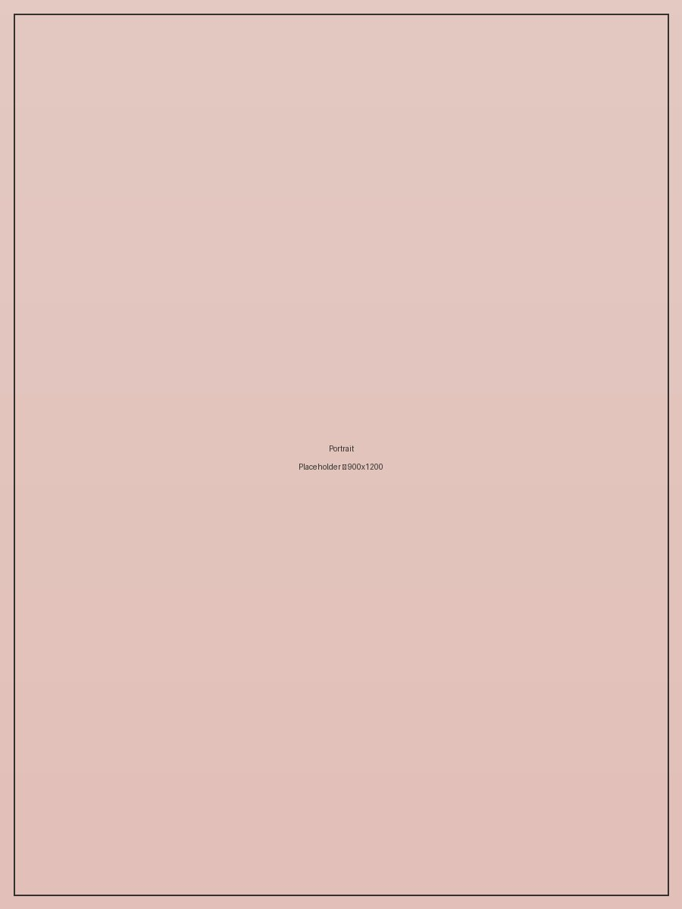

Über mich
Leise arbeiten,
Leise arbeiten,
klar gestalten.
Ich bin Gestalterin mit einem Faible für zurückhaltende Kompositionen, weiche Farbverläufe und Räume, die niemanden überfordern. Meine Arbeiten entstehen an der Schnittstelle aus Fotografie, Interior und Illustration.
Jedes Projekt beginnt mit derselben Frage: Was braucht diese Idee wirklich — und was darf wegbleiben? Diese Haltung zieht sich durch alles, was ich gestalte.
Nachricht schreiben